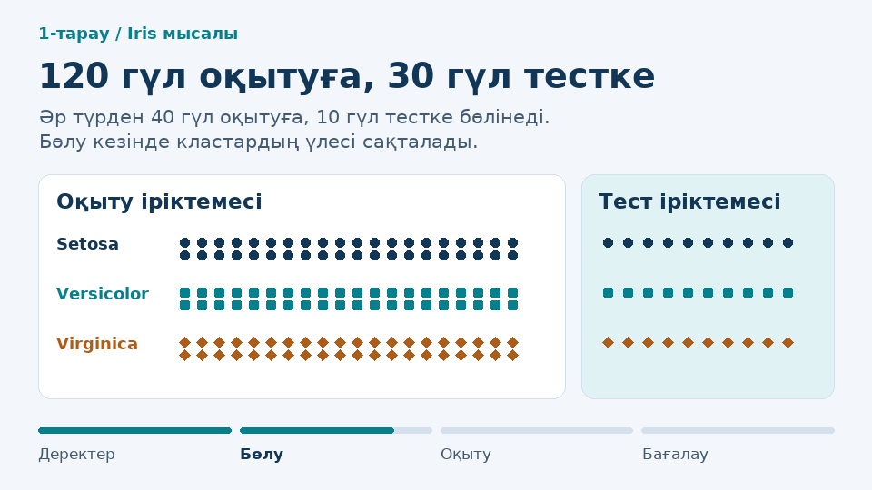

Әл-Фараби атындағы ҚазҰУ
Машиналық оқыту
Интерактивті электрондық оқулық
Деректерді дайындаудан модельді өрістетуге дейін. Теорияны, математикалық негіздемені және Python тәжірибесін бірізді меңгеруге арналған университеттік оқулық.
Оспан Әсел Ғалымжанқызы · PhD, доцент-зерттеуші
15 / 15 тараудың қазақша материалы тексерілген
Аяқталған тараулар 0 · Тексерілген жауаптар 0
Сызбалар, анимациялар және бейнесабақ
15 қадамдық сызба арқылы деректерді бөлуден бастап модельдің болжамын түсіндіруге дейінгі есептерді қараңыз.
Сызбаларды ашу · Бейнесабақты көру
I модульМашиналық оқытудың іргелі негіздері
01-ТАРАУ
Машиналық оқытуға кіріспе. Негізгі міндеттер, әдістер және ML жүйесін құру кезеңдері
Қолжетімді02-ТАРАУМашиналық оқыту үшін деректерді дайындау және алдын ала өңдеу
Қолжетімді03-ТАРАУСызықтық модельдер. Сызықтық, полиномдық және логистикалық регрессия
Қолжетімді04-ТАРАУЖіктеу әдістері. k-NN, шешім ағаштары, SVM және Random Forest
Қолжетімді05-ТАРАУМашиналық оқыту модельдерінің сапасын бағалау және валидация
ҚолжетімдіII модульОңтайландыру және заманауи алгоритмдер
06-ТАРАУ
Шамадан тыс үйрену, регуляризация және теңгерімсіз деректер
Қолжетімді07-ТАРАУМодельдерді оңтайландыру және гиперпараметрлерді баптау
Қолжетімді08-ТАРАУМұғалімсіз оқыту. Кластерлеу және өлшемділікті азайту
Қолжетімді09-ТАРАУАнсамбльдік әдістер және градиенттік бустинг
Қолжетімді10-ТАРАУМашиналық оқыту модельдерін түсіндіру
ҚолжетімдіIII модульҚолданбалы жүйелер және модельдің өмірлік циклі
11-ТАРАУ
Уақыт қатарларын машиналық оқыту және болжау
Қолжетімді12-ТАРАУМәтіндік деректерді машиналық оқыту және векторлық ұсыну
Қолжетімді13-ТАРАУАлдын ала оқытылған модельдер, эмбеддингтер және білімді тасымалдау
Қолжетімді14-ТАРАУМодельдің өмірлік циклі. Сақтау, өрістету және мониторинг
Қолжетімді15-ТАРАУЗаманауи бағыттар. Іргелі модельдер, генеративті модельдер және жауапты ЖИ
ҚолжетімдіІздеу үшін кемінде екі таңба енгізіңіз.